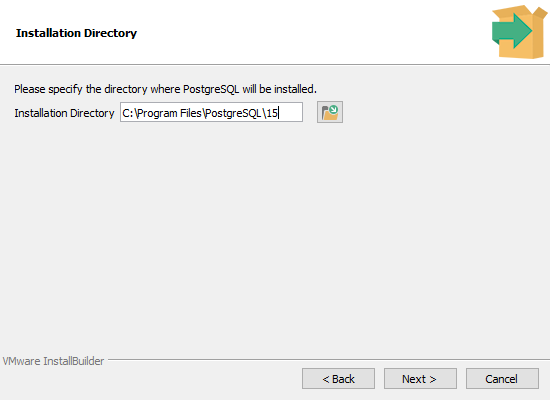

OMNICheck PostgreSQL Installation Wizard
Step 1: Starting the Installer
- Navigate to the folder where the PostgreSQL installer postgresql-x64.exe was saved.
- Double-click the installer to launch it.
- The installer may first run a Microsoft Visual C++ Redistributable precheck and install.

Step 2: Install PostgreSQL
- Run through the setup wizard.
- Choose install directory (default: C:\Program Files\PostgreSQL\10\).
- Keep pgAdmin checked for installation.
- Set username: Admin, password: Pass.
- Port: 5432.

Step 3: Install pgAdmin
- Run installer pgadmin4-x64.exe.
- Follow setup wizard.
- Verify OMNICheck Server appears.

Step 4: Configure OMNICheck Server
- Open pgAdmin.
- Create master password.
- Register server:
Name: OMNICheck Server
Host: localhost
Port: 5432
User: Admin / Pass

Step 5: Create Default Database
- In pgAdmin, expand OMNICheck Server → Databases.
- Right-click → Create → Database.
- Name it postgres.

Step 6: Install ODBC Driver
- Run installer PostgreSQL Unicode (x64).
- Verify installation via ODBC Data Sources.

Step 7: Verify Installation
- Launch pgAdmin and connect to OMNICheck Server.
- Open Query Tool.
- Run:
SELECT version(); - Confirm database postgres exists.

Installation Complete 🎉
You now have PostgreSQL installed with:
- Server: OMNICheck Server (localhost)
- User: Admin / Pass
- Database: postgres
- pgAdmin + ODBC Driver installed